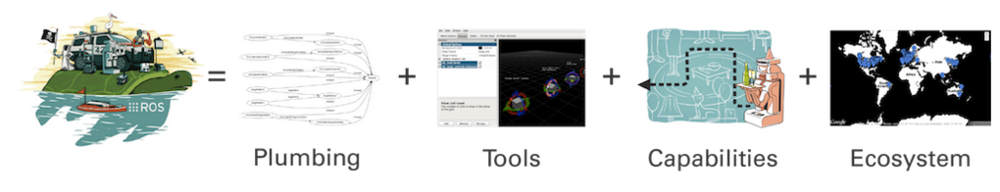
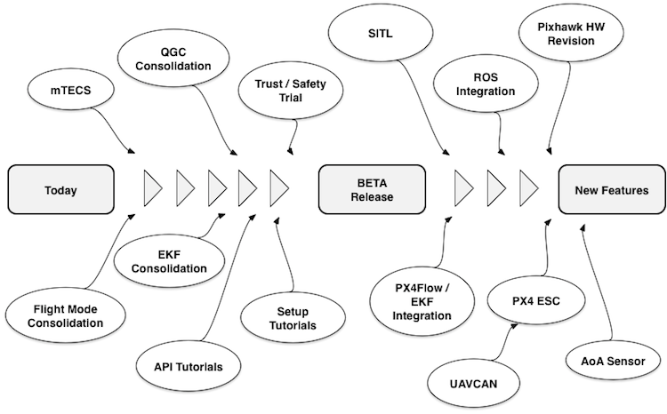
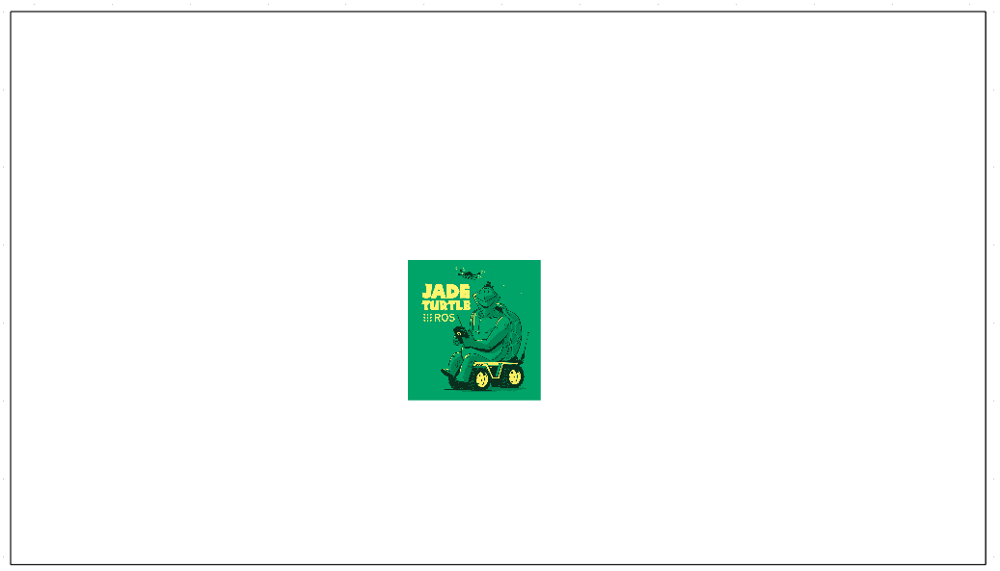
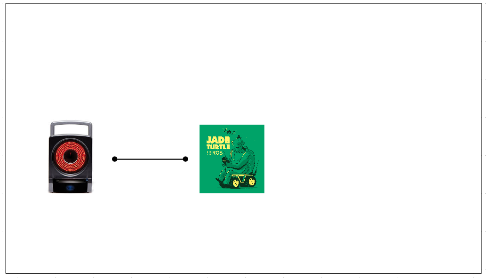
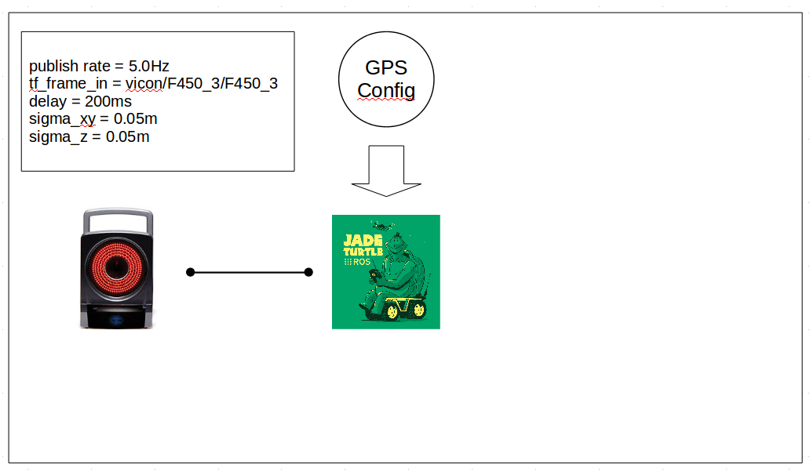
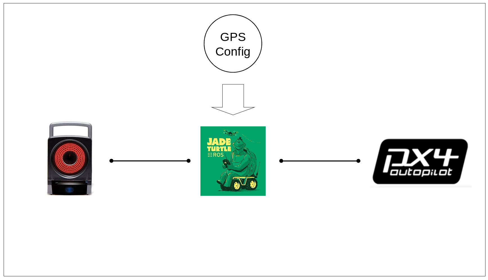
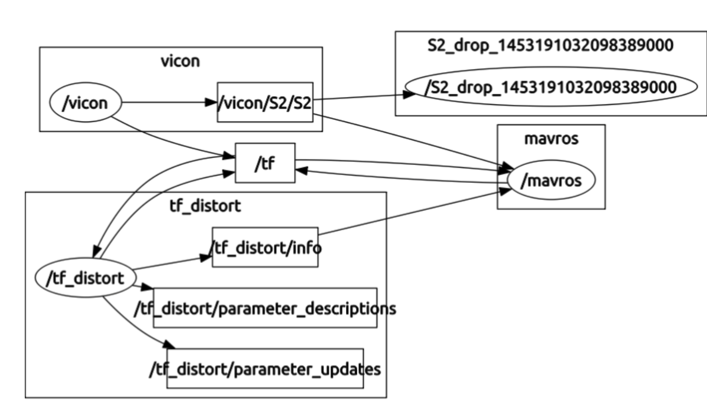
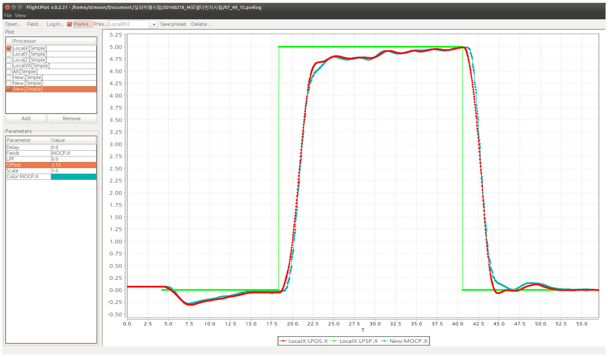

Introduction
안녕하세요. 오늘은 Fake GPS에 대해 알아보고자 합니다.
사실 Fake GPS는 Pixhawk에서 시험을 위해 미리 정해놓은 GPS 위치를 가르킵니다. 설정에서 GPS_FAKE를 yes로 설정하면 Fake GPS를 사용할 수 있죠. 하지만, 픽스호크 개발자 사이트에 가보시면 모션 캡쳐 시스템과 연동을 하여 GPS 상태를 모사하는 것을 가르키고 있네요. 아직 정의가 조금은 모호하지만, 어찌되었든 저희는 후자의 Fake GPS에 대해 알아보고자 합니다.
우선 개발 환경부터 알려드릴게요
- Ubuntu 14.04
- Motion Capture (VICON)
- Indigo ROS
- MAVROS, vicon_bridge
Fake GPS를 위해서는 가장 중요한 것은 모션 캡쳐가 있어야 한다는 거지요. 물론 모션 캡쳐가 매우 비싸기 때문에 일반인이 개인적으로 소유하기는 힘들겠지만, 연구실에서는 점차 많이 사용하고 있는것 같습니다. 따라서, 본 문서는 모션 캡쳐가 있다는 가정하에 말씀드리도록 하겠습니다. 참고로 이 문서에서는 모션 캡쳐로 VICON을 사용했지만, ROS에서 지원하는 다른 모션 캡쳐도 얼마든지 사용 가능합니다.
ROS
ROS가 뭐냐구요? ROS를 모르시는 분들이 계실 것 같아 간단하게 설명하겠습니다. ROS는 robot operating system의 약어입니다. 운영체제? 저도 처음에는 리눅스와 같은 운영체제인줄 알았지요. 하지만, ros.org에서 설명하는 글을 읽어보면 분명 운영체제가 아님을 알 수 있습니다.
The Robot Operating System (ROS) is a flexible framework for writing robot software. It is a collection of tools, libraries, and conventions that aim to simplify the task of creating complex and robust robot behavior across a wide variety of robotic platforms.
제가 생각하는 ROS란, 쉽게 얘기하면 툴박스와 같은 개념이라고 보시면 될 것 같습니다. 그런데 거기에 많은 개발자들이 정보를 공유하다 보니, 왠만한 센서들의 드라이버 등등이 있고, 어느 정도 프로토콜이 확정되어 있다보니, 여러가지 툴들을 활용하여 내부 데이터 흐름이라든지, 시각화하는 것을 쉽게 할 수 있게 되는 거지요. 결국 중요한 것은 하나의 시스템을 만들기 위해 필요한 잡다한 것을 ROS가 제공한다는 것입니다. 이렇게 되면 무엇보다도 시스템을 만드는 시간이 절약되고, 그 시간에 내가 연구하는 부분에 집중할 수 있게 되지요.

우리나라에서도 표윤석 박사님, 이지훈 연구원님과 같은 최고 전문가들이 있고, 오로카라는 네이버 카페에서 많은 활동들이 이루어지고 있으니, 참고하시길 바랍니다. 나중에 기회가 되면 좀더 자세히 설명하도록 하겠습니다.
사실 ROS는 로봇 분야에서 시작되었지만, 지금은 정말 다양한 분야에서 활용이 되는 것 같습니다. 제가 연구하고 있는 드론분야에서도 정말 많이 활용되지요. 특히, 제가 여러분들에게 자주 설명할 Pixhawk는 ROS와 정말 많이 닮아 있습니다. 그게 바로 publisher-subscriber design pattern인데, ROS와 Pixhawk의 내부 IPC(Inter-Process Communication)는 이 방법을 그대로 적용했답니다. 이렇게 닮은 꼴을 갖고 있는 이유는 뭘까요? 그것은 초기 Pixhawk가 개발되고 있을때 주 개발자였던 Lorenz Meier가 처음부터 ROS와 연동을 고려하고 있었기 때문이지요. 이런 이유로 ROS와 Pixhawk는 연동이 잘 됩니다.!!

Prerequisites
그러면 그럼 이제 각설하고, 본격적으로 어떻게 Fake GPS를 구동하는지 구체적으로 살펴보도록 하겠습니다. 우선 ROS가 설치된 컴퓨터가 필요합니다. 앞에서 말씀드린 것 처럼 ROS는 Indigo를 사용했습니다. 그리고 나서 MAVROS와 Vicon_bridge를 설치합니다. 설치하는 방법은 ros 홈페이지가보시면 상세히 잘 나와있습니다.
- MAVROS
- Vicon_bridge
Step 1
앞에서 설명했던 것 처럼 Fake GPS는 ROS 기반으로 동작합니다. 따라서 ROS가 동작할 만한 판을 만들어 주어야 합니다.이는 ROS를 처음 사용할 시에는 무조건 해주어야 하는건데, 이를 통해 ROS의 각 노드들이 통신할 수 있게 되지요.
$ roscore

Step 2
이제 ROS를 동작할 수 있는 기반이 만들어졌고, 본격적으로 FakeGPS 환경을 만들어봅시다. 먼저 모션캡쳐와 연동을 해야 합니다. 모션 캡쳐로부터 드론의 6 DOF를 받야아 하는데, ROS에서 이미 개발된 vicon_bridge를 사용하도록 하겠습니다. 이를 사용하면 vicon으로부터 특정 드론에 붙어 있는 마커를 통해 특정 패턴 정보를 받아 볼 수 있게 됩니다.
$ sh launch_fake_gps.sh

Step 3
sh launch_fake_gps_distorted.sh
이후, 실제 GPS 신호인 것 처럼 만들어 줍니다. 사실 모션 캡쳐는 최대 1000 Hz까지도 동작하지만, Pixhawk에서는 주로 GPS 신호를 5 Hz로 받고 있습니다. 따라서, 데이터 갱신 주기를 변경해 주어야 합니다. 그리고 모션 캡쳐는 1 mm 이하의 정확도로 측정이 가능한데, 실제 GPS는 오차가 매우 크기 때문에 white noise와 같은 노이즈 성분을 추가하여 GPS 상황과 유사하게 만들어 줍니다. 그리고 GPS는 지연 시간이 있기 때문에 지연 시간 또한 만들어줍니다. 이런 모든 것은 ROS에서 제공하는 ros_reconfigure 툴을 사용하여 수정이 가능하니, 외부에 나가 GPS신호에 대해 대략 분석해보고 좋을 때 나쁠 때의 상황을 재현할 수 있게 되는 거지요. 이게 결국 Fake GPS를 만들어주는 중요한 뽀인트 중 하나일 것 같군요.
$ rosrun rqt_reconfigure rqt_reconfigure
- publish rate = 5.0Hz
- tfframein = vicon/yourModelName/yourModelName (e.g.
- vicon/DJI450/DJI450)
- delay = 200ms
- sigma_xy = 0.05m
- sigma_z = 0.05m

Step 4
이제 Pixhawk를 Fake GPS가 연동 될 수 있도록 만들어주어야 할 때가 왔군요. Pixhawk는 내부에 Param 형태로 설정값을 변경할 수 있도록 되어 있습니다. 이 또한 ROS와 비슷하네요. 아무리 봐도 Lorenz Meier는 분명 ROS 매니아 였거나 그동안 많이 사용해보았던 흔적들이 보입니다. 나중에 한번 역추적해보도록 하겠습니다. 자 어찌 되었든, 크게 세가지 부분을 변경해야 합니다. 첫째, MAV_USEHILGPS입니다.
MAV_USEHILGPS to 1 (enable HIL GPS, go to PARAMETERS->MAVLink)
이 부분을 enable시켜주면 HILS에서 생성된 GPS를 사용하겠다는 의미입니다. 그런데 약간 문제가 있습니다. 모션캡쳐가 설치된 환경에서도 가끔씩 GPS 신호가 약하게 잡히는 경우가 있다는 점입니다. 아마 해보시면, 그런 문제가 생길 수 있을 것입니다. 결국 이렇게 되면 GPS 신호가 두군데에서 들어오게 되고, Pixhawk 내부에서는 엄청난 혼란에 빠지게 됩니다. 특히, 이를 사용하여 드론의 속도등을 계산하게 되는데, 실제 신호는 한국으로 되어 있고, FakeGPS 신호는 스위스를 기반으로 두고 있다면, 드론 입장에서는 워프가 발생하는 거지요. 이 문제에 대해서는 수정 사항을 코드에 업데이트 하고 있습니다. 아마 버전 1.3.0에 적용될 예정이니 참고하세요
ATT_EXT_HDG_M to 2 (use heading from motion capture, go to PARAMETERS->Attitude Q estimator)
두번째는 드론의 헤딩 정보를 모션캡쳐로 부터 오는 데이터로 변경하는 것입니다. 실내에서는 지자기 센서가 혼란을 일으킬 수 있는 많은 물질들이 있어 실제 실내에서 지자기 센서를 사용해보면 매우 불안정 합니다. 따라서 이 정보를 모션 캡쳐를 이용하여 보상해주어야 하는 거지요. Pixhawk 내부에서는 우선 북쪽을 지자기 센서를 통해 대충 알아내고, 모션캡쳐로 부터 헤딩 위치 보상을 해주어 동작하도록되어 있습니다.
INAV_DISAB_MOCAP to 1 (disable mocap estimation, go to PARAMETERS->Position Estimator INAV).
다음은 모션 캡쳐 위치 예측 모드를 꺼줍니다. 어? 왜 모션 캡쳐를 사용하여 위치 인식하는 것이 목적인데 모션캡쳐 위치 예측 모드를 꺼야 하냐구요? 저희는 GPS 를 모사하는 것이지 모션캡쳐기반의 위치 인식을 하면 안됩니다. 그러면 모사하는 의미가 없는거지요. 아주 정밀한 위치를 측정해버리기 때문이지요.
Step 5
자 여기까지 되었으면 드디어 생성된 GPS 데이터를 보내면 됩니다.
mocap_tf_sub = mp_nh.subscribe("/vicon/DJI_450/DJI_450_drop", 1, &MocapFakeGPSPlugin::mocap_tf_cb, this);
fcu_url은 /dev/ttyUSB0 이라는 곳으로 연결된 Zigbee와 같은 통신 모듈을 통해 보내라는 것이고, baud rate은 57600으로 하라는 뜻입니다. 이 정보를 pixhawk로 보내는 것이 바로 MAVROS이지요.

Node Graph
지금까지 설명한 것을 그림으로 그리면 다음과 같습니다.ROS는 이런 그림까지 지원해주니, 전체 시스템을 바라볼때 쉽게 확인할 수 있겠지요? 참 여기서 설명하지 않은 S2dropXXX은 무시하셔도 됩니다.

Test Result
모션 캡쳐를 통해 실외 환경을 모사하게 되면 사실 다양한 환경을 직접 만들 수 있다. 그 중 하나가 바로 position estimator이다. Pixhawk의 경우 GPS-INS 방법을 사용하는데, GPS의 EPH 및 EPV에 따라 어느 정도 정밀하게 측정할 수 있는가를 확인할 수 있다. 아래 그림은 이상적인 GPS환경 (EPH: 0.07, EPV: 0.05)인 경우에서의 동작 화면이다.

Reference
후기
처음 작성하다 보니, 많은 문제가 있는 것 같습니다. 그리고 Pixhawk에 대한 분석한 내용을 연재로 해볼까 생각이 들었습니다. 저도 잘은 모르지만, 작성하면서 저도 배울 수 있을 것 같네요.